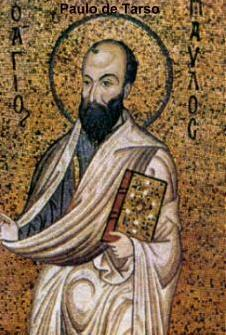
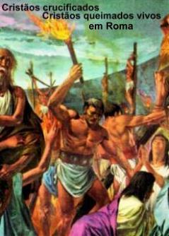
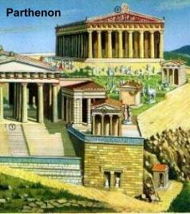

TERCEIRA VIAGEM APOSTÓLICA
 A Terceira viagem foi realizada entre os anos 53 e 58. (At 18,23 e 21,17).
Paulo percorreu a Frigia e a Galáxia, visitando e estimulando as Comunidades
Cristãs, a fim de que continuassem fieis ao SENHOR. Depois, viajou pela
região alta e desceu a Êfeso. Encontrando os discÃpulos perguntou-lhes:
“Recebestes o ESPÃRITO SANTO quando
abraçastes a fé?†Eles responderam:
“Nem ouvimos dizer que há um ESPÃRITO
SANTO.†(At 19,2)
A Terceira viagem foi realizada entre os anos 53 e 58. (At 18,23 e 21,17).
Paulo percorreu a Frigia e a Galáxia, visitando e estimulando as Comunidades
Cristãs, a fim de que continuassem fieis ao SENHOR. Depois, viajou pela
região alta e desceu a Êfeso. Encontrando os discÃpulos perguntou-lhes:
“Recebestes o ESPÃRITO SANTO quando
abraçastes a fé?†Eles responderam:
“Nem ouvimos dizer que há um ESPÃRITO
SANTO.†(At 19,2)
Falou Paulo: “Em que Batismo vocês foram batizados?†Responderam: “Com o Batismo de Joãoâ€. (At 19,3) O Apóstolo, então lhes explicou: “João batizou com um Batismo de Penitência, dizendo ao povo que cresse Naquele que viria após ele, isto é, em JESUS.†(At 19,4) Tendo ouvido isto, pediram e foram batizados, e quando Paulo lhes impôs as mãos, o ESPÃRITO SANTO veio sobre eles, e eles se puseram a falar em lÃnguas e a profetizar.
 DEUS
operava milagres extraordinários pelas mãos do Apóstolo, a tal ponto que
bastava colocar sobre os doentes um lenço ou um avental invocando o nome
do SENHOR JESUS, era suficiente para afugentar os espÃritos maus ou curar
alguma moléstia.
DEUS
operava milagres extraordinários pelas mãos do Apóstolo, a tal ponto que
bastava colocar sobre os doentes um lenço ou um avental invocando o nome
do SENHOR JESUS, era suficiente para afugentar os espÃritos maus ou curar
alguma moléstia.
Evangelizou durante dois anos esta parte da Ãsia que tem Êfeso como centro e forma um grupo com sete cidades, as mencionadas sete Igrejas no Apocalipse de São João (Ap 1,11), (Êfeso, Esmirna, Pérgamo, Tiatira, Sardes, Filadélfia e Laodicéia) de modo que todos os habitantes gregos e judeus, puderam ouvir a Palavra do SENHOR.
Seguindo
com a missão, despediu-se dos discÃpulos e partiu em direção a Macedônia.
Trabalhou um bom tempo na região e depois viajou para a Grécia, onde
evangelizou durante três meses. Tinha a intenção de seguir para a SÃria e
Jerusalém, mas decidiu voltar a Macedônia. Seus companheiros eram Sópatros,
natural da Beréia; Aristarco e Segundo, da Tessalônica; Gaio de Doberes, e Timóteo,
além dos asiáticos TÃquico e Trófimo.
onde
evangelizou durante três meses. Tinha a intenção de seguir para a SÃria e
Jerusalém, mas decidiu voltar a Macedônia. Seus companheiros eram Sópatros,
natural da Beréia; Aristarco e Segundo, da Tessalônica; Gaio de Doberes, e Timóteo,
além dos asiáticos TÃquico e Trófimo.
Evangelizaram Trôade durante uma semana e depois partiram para Mileto. Paulo não queria seguir em direção a Êfeso, a fim de estar em Jerusalém, no dia de Pentecostes. Por essa razão, de Mileto, onde estava, mandou chamar os anciãos da Igreja de Êfeso, a principal Igreja fundada por ele. O Apóstolo tinha um pressentimento que esta seria a sua última viagem a Ãsia. Então queria despedir-se de seus amigos e irmãos na fé, por isso, fez um longo e emocionado discurso! Disse: “Estou acorrentado pelo ESPÃRITO, vou a Jerusalém sem saber o que lá me sucederá, senão que, de cidade em cidade o ESPÃRITO SANTO me atesta que me aguardam cadeias e tribulações. Mas não considero preciosa a minha própria vida, contanto que leve a bom termo minha carreira e cumpra o ministério que recebi do SENHOR JESUS de dar testemunho ao evangelho da graça de DEUS. E agora estou certo de que não haveis mais de rever o meu rosto, vós todos entre os quais eu passei pregando o Reino.†(At 20,22-25)
E continuou, lembrando as Palavras do SENHOR JESUS que disse: "Há mais felicidade em dar do que em receberâ€, ajoelhou-se com eles e fizeram uma oração. Todos, então, prorromperam em pranto e, lançando-se ao pescoço de Paulo, beijavam-no, aflitos, sobretudo, por causa da palavra que ele havia dito: "que não haveriam mais de rever o seu rosto". Depois o acompanharam até a embarcação. (At 20,35-38)
VIAGEM A JERUSALÉM
 Chegando,
foi recebido pelos irmãos com muita alegria. No dia seguinte, tiveram um
encontro na casa de Tiago Menor, com a presença de diversos Apóstolos e anciãos
da Comunidade Cristã de Jerusalém. Depois das saudações, relatou
minuciosamente o que DEUS fez entre os gentios por seu ministério. E todos,
entusiasticamente, glorificavam a DEUS e a admirável Obra Divina.
Chegando,
foi recebido pelos irmãos com muita alegria. No dia seguinte, tiveram um
encontro na casa de Tiago Menor, com a presença de diversos Apóstolos e anciãos
da Comunidade Cristã de Jerusalém. Depois das saudações, relatou
minuciosamente o que DEUS fez entre os gentios por seu ministério. E todos,
entusiasticamente, glorificavam a DEUS e a admirável Obra Divina.
Na sequência dos dias, visitando o Templo, foi reconhecido por judeus que viveram na Ãsia e que não gostavam dele, por isso anunciaram aos gritos: “Aqui está aquele que é traidor do povo judeu e prega em todo lugar contra a nossa Lei e contra este Temploâ€. O boato se espalhou, a cidade ficou em efervescência e o povo se apoderou de Paulo, o arrastaram para fora do Templo e bateram nele. Como o Templo foi erguido ao lado da Fortaleza Antonia, onde estava o edifÃcio do Tribunal Romano, um tribuno viu aquela movimentação e se aproximou com soldados armados. A multidão parou de agredir Paulo. O tribuno perguntou o que estava acontecendo? Muitas vozes quiseram explicar ao mesmo tempo e por isso, ele nada entendeu. Mandou algemar o Apóstolo e conduzi-lo para a Fortaleza Antonia. No patamar da escadaria do Tribunal, Paulo pediu ao tribuno para remover as algemas de seus pulsos que ele queria falar a multidão. O tribuno ficou admirado ao vê-lo falar tão bem em hebraico. Isto porque, ele imaginara que aquele ali fosse um bandido egÃpcio que tinha uma quadrilha com mais de 4 mil homens. Paulo, discursou ao povo, lembrando que antes de sua conversão, era um fariseu zeloso que perseguia e matava os cristãos, que até seguiu para Damasco objetivando prender os que lá viviam a fim de trazê-los com as suas famÃlias, acorrentados para os cárceres em Jerusalém. Falou a respeito da Aparição de JESUS e de sua conversão ao cristianismo. Depois disse: "De volta a Jerusalém, rezando no Templo, o SENHOR mandou que eu saÃsse de Jerusalém e fosse ao longe: "Aos gentios é que EU quero lhe enviarâ€. (At 21) (At 22,21)
Quando pronunciou estas palavras, o povo prorrompeu em gritos e palavrões, dizendo: “Mata esse individuo! Ele não merece viver!â€
O tribuno mandou introduzi-lo na Fortaleza para interrogá-lo. Quando ficou sabendo que o prisioneiro além de hebreu, era romano da CilÃcia, mandou tirar as algemas e dispensou-lhe um melhor tratamento. Querendo saber exatamente de que os judeus acusavam Paulo, ordenou que se reunissem os sumos-sacerdotes no Sinédrio e no dia seguinte, o Apóstolo foi conduzido diante das autoridades judaicas.
Todavia os judeus prepararam uma trama, com testemunhas falsas para incriminar Paulo. Ele percebeu e observando que entre eles existiam fariseus e saduceus, aplicou uma tática inteligente para jogar uma facção contra a outra, sabendo que os saduceus não acreditavam na ressurreição, nos anjos e nem nos espÃritos. Disse o Apóstolo: “Irmãos, eu sou fariseu, filho de fariseus. É por causa de nossa esperança, a ressurreição dos mortos, é que sou submetido a juÃzo.†(At 23,6)
Mal ele acabou de proferir estas
palavras, formou-se um conflito generalizado entre fariseus e saduceus,
e a assembléia se dividiu. E no meio de toda aquela algazarra, vozes de fariseus se
levantaram a favor de Paulo, dizendo que ele era inocente.
entre fariseus e saduceus,
e a assembléia se dividiu. E no meio de toda aquela algazarra, vozes de fariseus se
levantaram a favor de Paulo, dizendo que ele era inocente.
O tribuno Cláudio LÃsias, temendo que reduzissem o prisioneiro a migalhas, mandou os guardas levá-lo para a Fortaleza Antonia. Durante a noite, o SENHOR apareceu a Paulo e lhe disse: “Coragem! Assim como prestastes testemunho de mim em Jerusalém, deverás também testemunhar em Roma.†(At 23,11)
Corria o ano 58 da era cristã. Como os judeus continuassem a tramar contra a vida do Apóstolo, o tribuno decidiu enviá-lo para Cesaréia, a fim do procurador Antônio Felix julgá-lo. Preparou uma forte escolta e expediu uma carta, mandando que o prisioneiro fosse apresentado a autoridade romana.
PRISIONEIRO EM CESARÉIA
 Felix
lendo a carta de LÃsias, ficou ciente do acontecimento. Mandou aprisionar Paulo
no pretório de Herodes, enquanto se decidia sobre o caso. Dias após, vieram de
Jerusalém, o Sumo Sacerdote Ananias com alguns anciãos do povo e o advogado
Tertulo, com o propósito de incriminarem o Apóstolo. Trouxeram Paulo
a presença do Governador Felix e então, Tertulo fez as acusações: e como
sempre, sem fundamento, mentirosas e levianas. Paulo, tranquilo e com
bastante naturalidade fez a sua defesa, atendendo a um aceno de permissão dado por
Felix. O tribuno romano ouvindo as duas partes, sem encontrar algum tipo de
transgressão, não quis se definir, despediu os acusadores e ordenou ao centurião
que conservasse Paulo prisioneiro, mas que lhe desse uma relativa liberdade e não
impedisse que nenhum dos seus lhe prestasse algum serviço.
Felix
lendo a carta de LÃsias, ficou ciente do acontecimento. Mandou aprisionar Paulo
no pretório de Herodes, enquanto se decidia sobre o caso. Dias após, vieram de
Jerusalém, o Sumo Sacerdote Ananias com alguns anciãos do povo e o advogado
Tertulo, com o propósito de incriminarem o Apóstolo. Trouxeram Paulo
a presença do Governador Felix e então, Tertulo fez as acusações: e como
sempre, sem fundamento, mentirosas e levianas. Paulo, tranquilo e com
bastante naturalidade fez a sua defesa, atendendo a um aceno de permissão dado por
Felix. O tribuno romano ouvindo as duas partes, sem encontrar algum tipo de
transgressão, não quis se definir, despediu os acusadores e ordenou ao centurião
que conservasse Paulo prisioneiro, mas que lhe desse uma relativa liberdade e não
impedisse que nenhum dos seus lhe prestasse algum serviço.
Passaram-se dois anos e no ano 60, Antônio Felix que era o tribuno romano, Governador da Judéia, foi substituÃdo no cargo por Pórcio Festo.
Três dias após a sua posse, Festo recebeu a presença dos judeus que insistiam em caluniar contra Paulo. O novo Governador mandou um centurião trazer o Apóstolo a sua presença e querendo agradar os judeus, teceu perguntas baseadas nas mentiras dos acusadores. Paulo, como de outras vezes, saiu-se muito bem, inclusive afirmando: “Estou diante do Tribunal de César, onde devo ser julgado. Nenhum mal fiz aos judeus, tu o sabes perfeitamente. Mas, se sou realmente culpado, se cometi crime que mereça a morte, não recuso morrer. Se, ao contrário, nada de bem fundado há nas acusações destes contra mim, ninguém tem o direito de me ceder a eles. Apelo para César!†(At 25,10-11)
Festo então conferenciou com o seu conselho e disse: “Apelaste para César, a César irás.†(At 25,12)

  